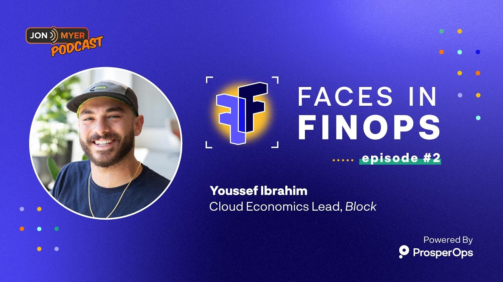

Talks & Appearances
A few places I've spoken or been a guest, mostly on FinOps, AI-assisted cost tooling, and cloud governance.

Youssef Ibrahim
Cloud Cost & Infrastructure Engineering Professional · Aspiring Analog Hobbyist
A few places I've spoken or been a guest, mostly on FinOps, AI-assisted cost tooling, and cloud governance.
